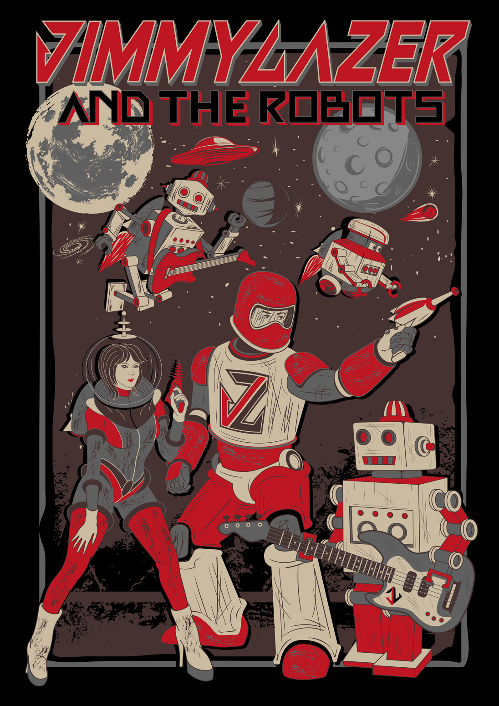

Hello, my name is Drew.
(My friends call me Andrew, Drew, Piispo, or even Doug.)
I’m a scrappy, energetic, slightly-scatterbrained entrepreneur from Boston, MA who now lives close to Central PA.
I'm a graduate of Babson College, Class of 2018 and an incoming graduate student at UC Berkeley where I'll be working part-time towards a Masters in Data Science.
But as they say - with failure, comes success. As a result, I‘ve kept up a decent range of places that I've worked.
(Internships included AIG, Performance Motion Devices, Accorin and shoveling rat dung out of attics in high school)
- 2018Graduated Babson. Became a Data Analyst Consultant for Skipping Stone
- 2020Left SS to work on a family business that grew into Direct Machines
- 2021Left DM to join Wayfair in Partner Operations
- 2022Left Wayfair to run Cann's supply chain
While I keep myself busy, on the weekends I like to pursue personal projects.
BiohackerBerkeley Bootcamp
When I am out of working-mode, I enjoy all things music

Jimmy Laser and the Robots
Concerts I've attended
- 2 Chainz
- Andrew McMahon and the Wilderness
- Arctic Monkeys
- Avett Brothers
- Bassnectar
- Big Data
- Big Sean
- Blink-182
- Boston Symphony Orchestra 3x
- Cage the Elephant
- Chain Smokers
- Cheat Codes
- Citizen Cope
- City and Colour
- Coldplay 2x
- Dave Matthews Band
- Dispatch
- Fitz and the Tantrums
- Fleet Foxes 2x
- Foo Fighters 2x
- Foster the People
- Green Day
- Grouplove
- Guster
- Head and the Heart
- Hey Marsellies
- Imagine Dragons
- Jack Johnson 2x
- Joe Russo's Almost Dead
- Jon Bellion
- Kygo
- Linkin Park
- Live
- Manchester Orchestra
- Matt and Kim 2x
- MGMT
- Modest Mouse
- My Chemical Romance
- Odesza
- Of Monsters and Men 2x
- OK Go
- Oliver Heldens
- Outkast
- Paul McCartney
- Phil Collins
- Pigeons Playing Ping Pong
- Pitbull
- Pixies
- Pretty Lights
- Red Hot Chili Peppers
- Roger Waters
- Sam Smith
- Steely Dan
- Steve Aoki
- Sturgill Simpson
- The Fools
- The Killers
- The Mighty Mighty Bosstones
- The White Panda
- They Might be Giants
- Third Eye Blind
- Vampire Weekend
- Walk Off the Earth
- Weezer
- Zach Brown Band
- Zedd 2x
(Makes for great small talk)
Countries I've visited
- Bermuda
- Canada
- Costa Rica
- Dominican Republic
- England
- Estonia
- Finland
- France
- Germany
- Italy
- Jamaica
- Mexico
- Northern Ireland
- Poland
- Spain
- Switzerland
- United States
(Basically, I have a lot to see in both the Easternand the Southern Hempispheres)
People who care about me
This website was built with Python's Django library.